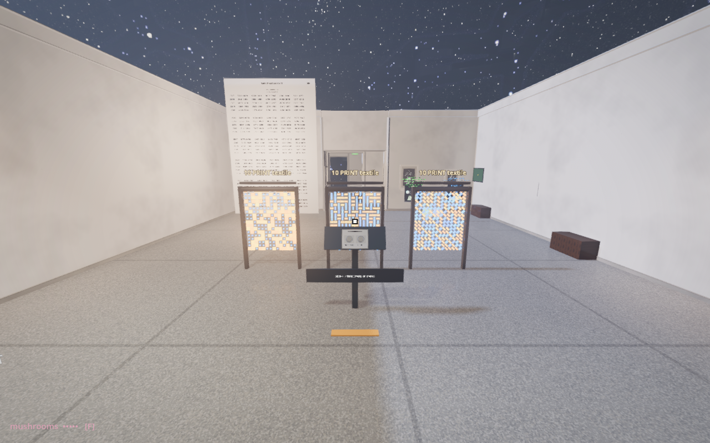
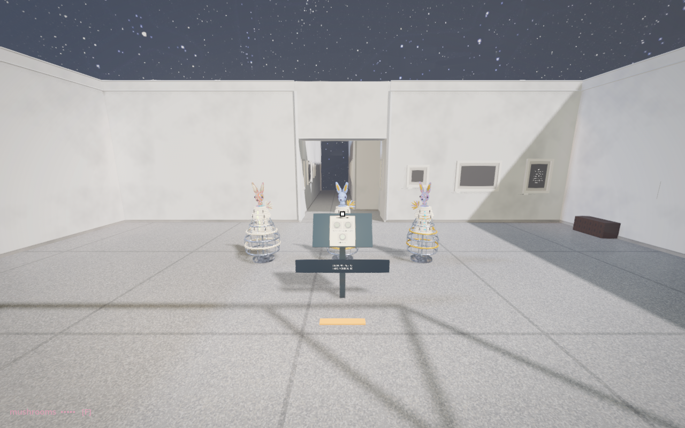

ADA RESEARCH / RANDOMNESS
Another draw.
Another recipe.
Two supporting encounters use existing DNA generators. The main seed-replay experiment and mushroom garden remain in place.
Definition: same draws, other marks

Three ten_print_textile instances share seed 41 and stay still. The alphabets differ: diagonals, orthogonals, blocks. NEXT SEED changes all three together; RESET returns to 41. Follow a cell between the panels: a shared draw can acquire another visual meaning.
Mushrooms: three individuals, one construction

Three dream_couture_beast bodies begin with seeds 41, 42 and 43, hare heads and sheath garments. NEXT SEED produces another trio. GARMENT retains the seeds and cycles sheath, crinoline, quilted, bloom and fringe. The screenshot shows crinoline. RESET restores the starting trio.
The seed varies proportions, prints and details. The garment control changes the construction instructions. Neither makes these sculptures autonomous agents. The book asks which possibilities the visitor would add to the recipe.
Checked in Godot
76 runtime checks pass, including control reach, three instantiated specimens, shared textile draws and retained couture seeds after garment changes. Gallery entry, exit and side routes have floor support. Headset testing remains.
Definition text · Mushrooms text